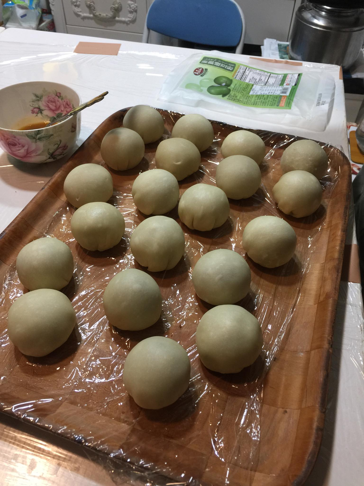
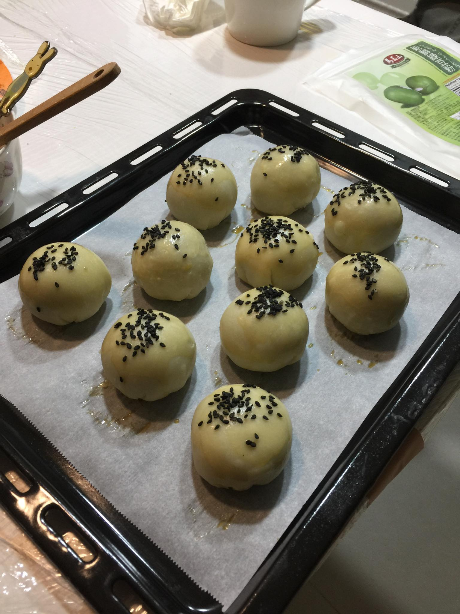
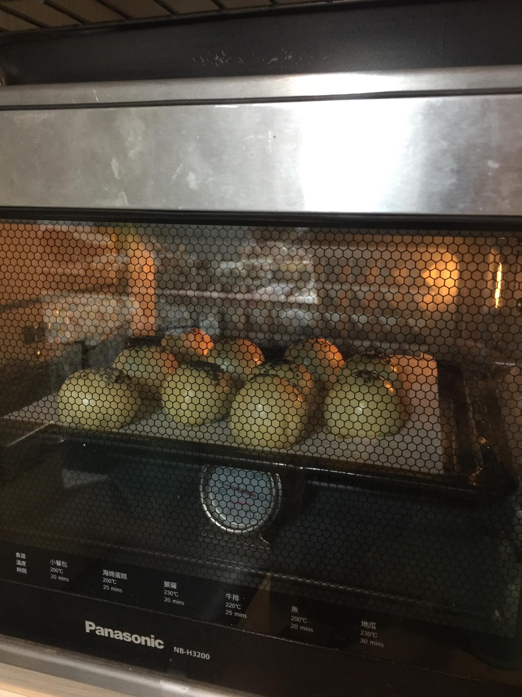
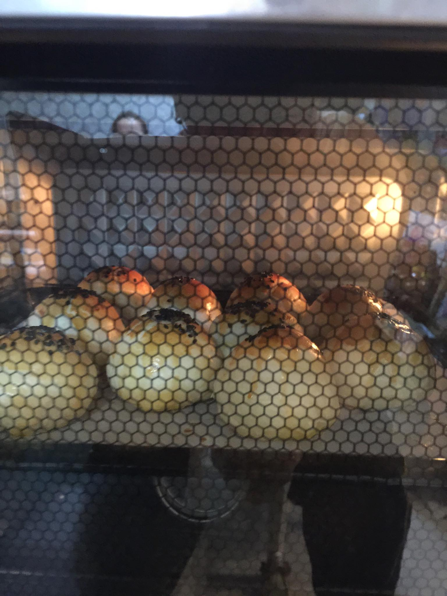
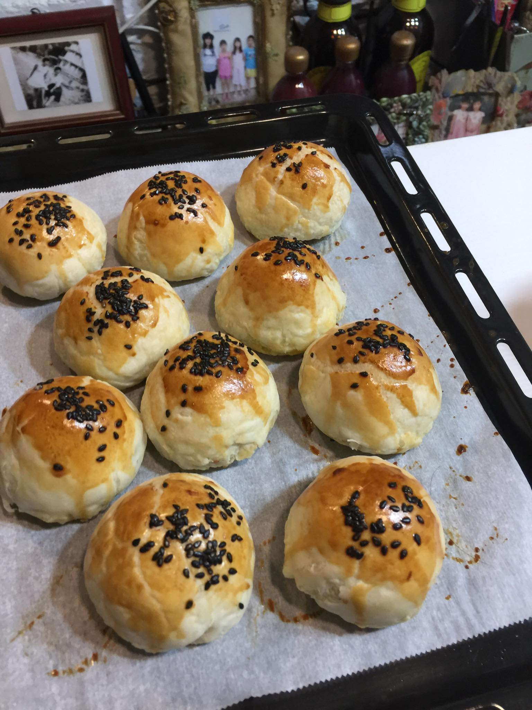
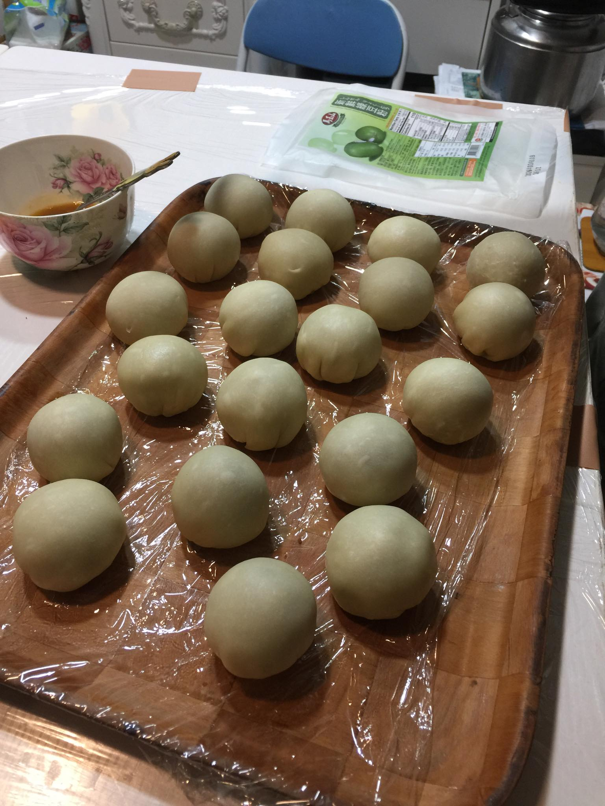
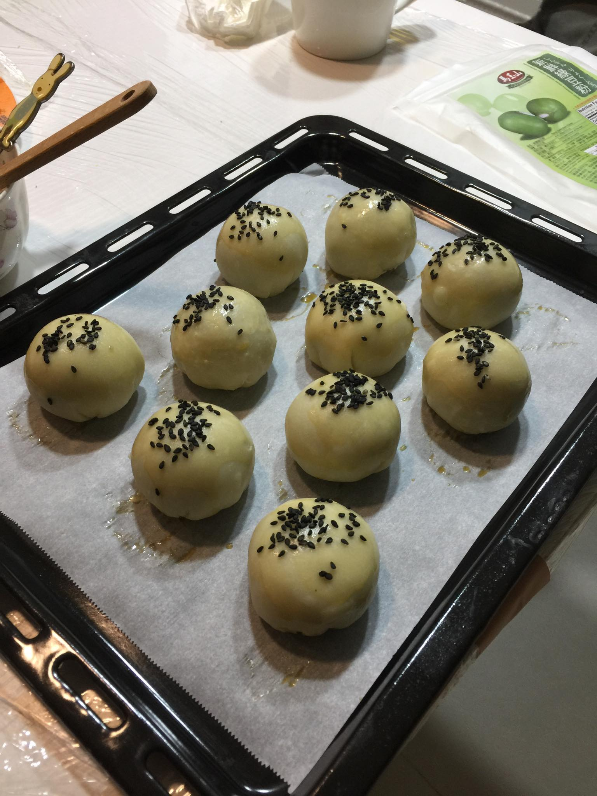
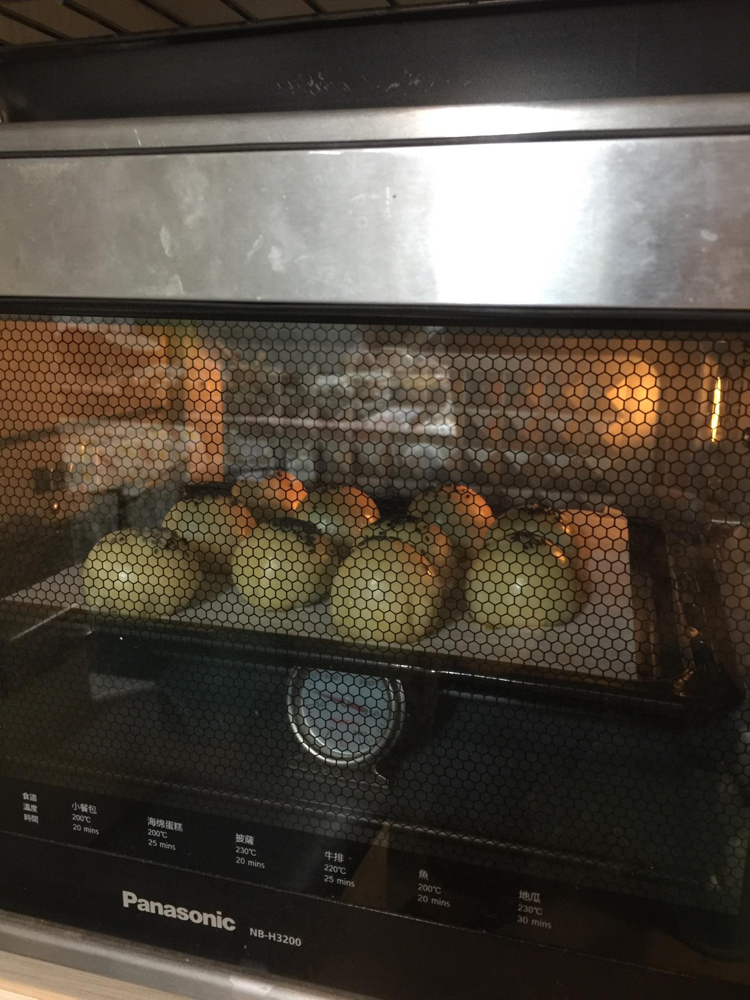
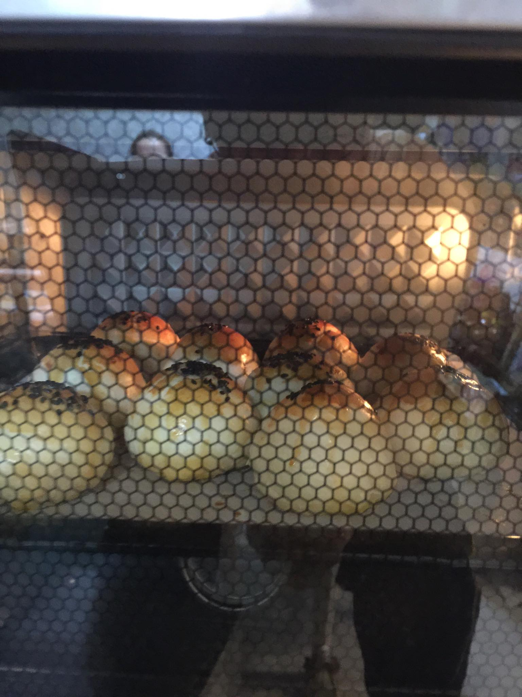
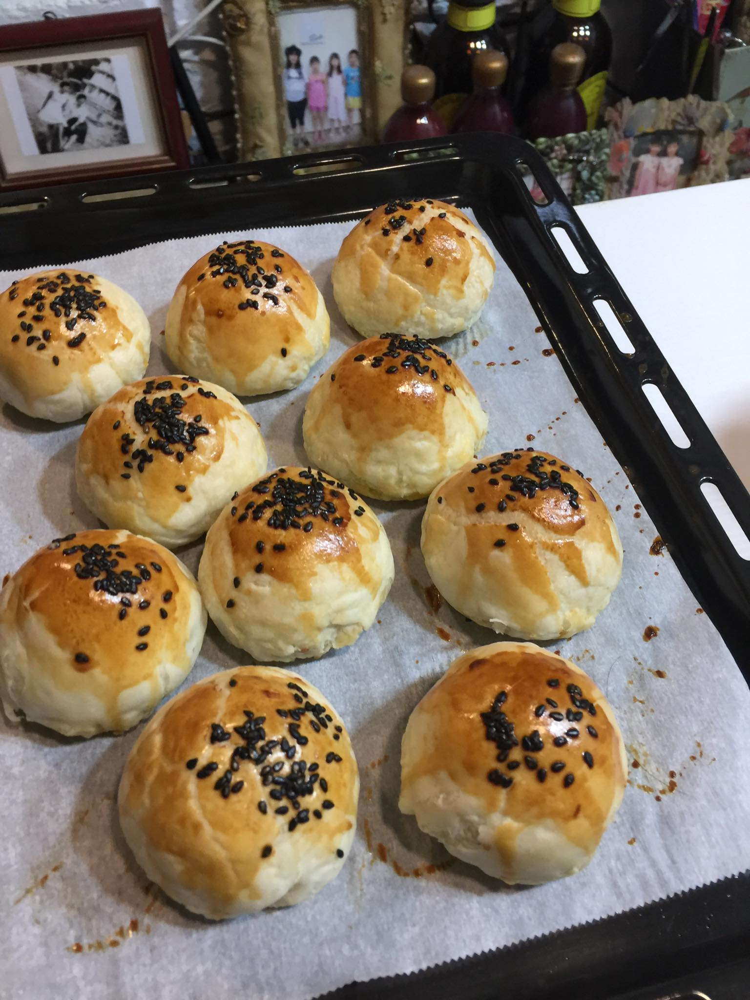

預祝大家中秋節快樂
從前從前，在子貓家裡，住著一群夢幻般的點心居民。這裡有酥皮餅、紅豆湯圓，還有一個名叫「小黃黃」的蛋黃酥。
小黃黃是一個圓圓胖胖的小點心，內心溫暖軟糯，外表金黃酥脆，還有一顆閃亮亮的鹹蛋黃藏在他的肚子裡。
小黃黃從一顆小麵團開始，總是有一點害羞。他和其他點心朋友們一起在村莊的點心學校學習如何變成最美味的自己。剛開始，小黃黃覺得很困惑，他不明白為什麼自己的肚子裡有個鹹蛋黃，跟周圍的紅豆湯圓、奶黃包相比，他覺得自己很特別卻也很孤單。湯圓們圓滾滾，跳來跳去，而奶黃包則總是柔軟蓬鬆，擁抱著甜蜜的奶香，似乎大家都過得輕鬆又快樂。
某一天，點心學校的老師，一位德高望重的酥皮大師，注意到了小黃黃的擔憂。大師微笑著說：「孩子，每個點心都有自己的使命。你的鹹蛋黃雖然看起來與眾不同，但它將帶給大家一種無法替代的驚喜。你現在只是麵團階段，等到經過揉捏、包餡、烘焙，你就會明白自己的獨特之處。」
於是，小黃黃開始了他的成長旅程。他先經歷了輕柔的揉捏，慢慢變得更圓潤。接著，他被小心翼翼地包裹住酥皮，這層層的酥皮就像他的保護殼一樣，將他的美味緊緊包覆。雖然這個過程有點癢癢的，但小黃黃努力忍耐，因為他知道這是成為完美蛋黃酥的重要一步。
最緊張的時刻來了！小黃黃被送進了熱騰騰的烤箱。烤箱裡的溫度讓他感到又熱又難受，但他記得大師的話：「只有在熱火中經歷，才能變成真正的蛋黃酥。」隨著時間的流逝，小黃黃的外表開始變得金黃酥脆，香氣四溢。他感受到內心的鹹蛋黃與外層的酥皮完美結合，終於明白了自己獨一無二的美味。
當小黃黃出爐時，村莊裡的點心們都聚集過來。大家驚訝地發現，這個原本害羞的小點心，竟然散發出無法抗拒的香氣。紅豆湯圓和奶黃包紛紛來恭喜他：「小黃黃，你的鹹蛋黃真是太棒了！原來你有這麼美味的內心！」
小黃黃笑了，他終於明白，每個點心都有自己的價值與獨特之處。從那天起，他不再害羞，而是自豪地站在點心架上，成為村莊裡最受歡迎的小蛋黃酥，將他的酥脆與鹹香傳遞給每一個品嚐他的人。
故事的最後，小黃黃發現，原來成為自己，就是最棒的冒險！
子貓玲/CoNeCoLin | Original Date: 2024-09-09 14:40:32
 








